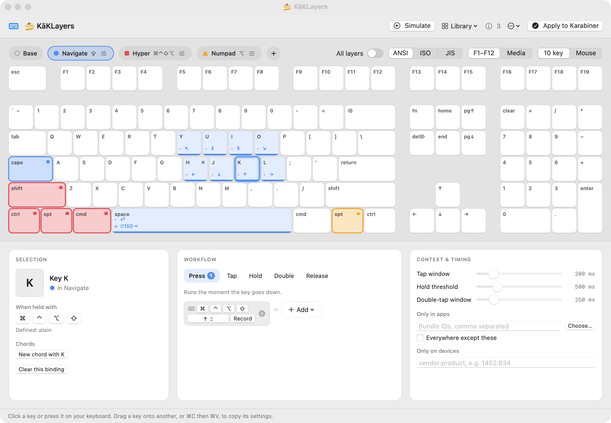
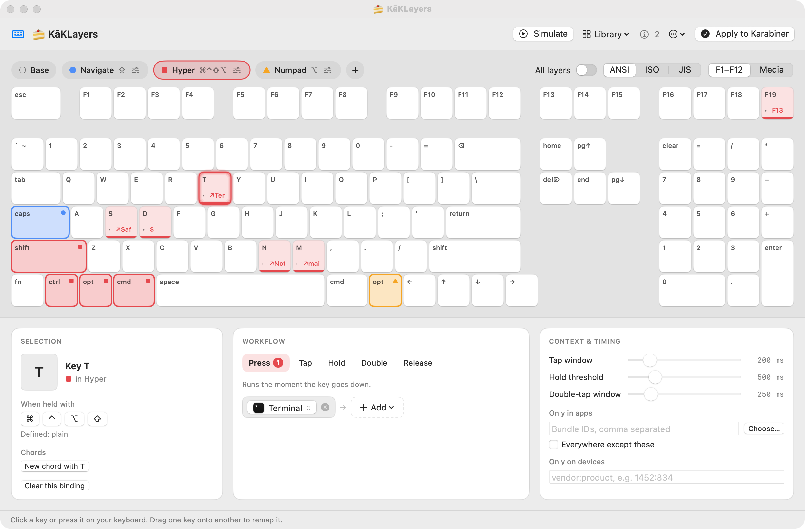
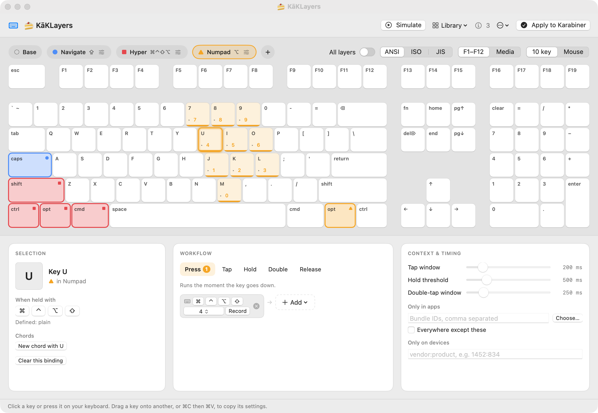
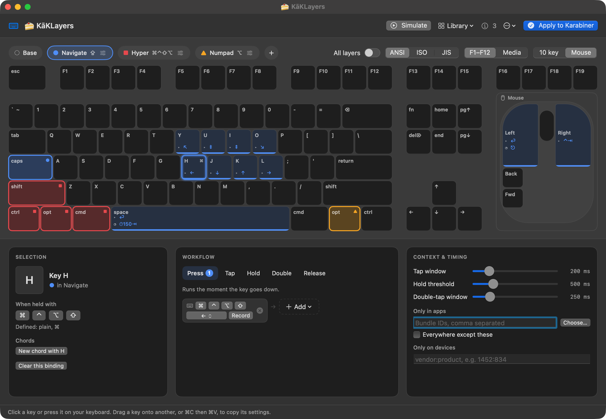
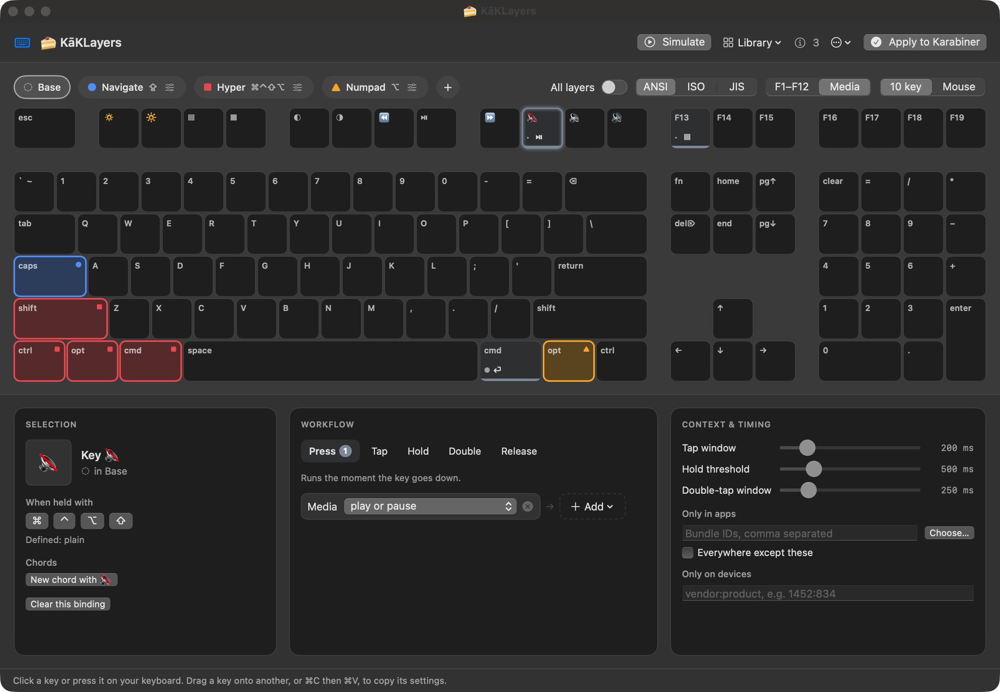

A visual GUI configurator for Karabiner-Elements: a free, native Mac app that builds your Karabiner configuration for you. Build super keys, layers and advanced key workflows by clicking the keys you already know.
Download for macOS View on GitHub
Karabiner-Elements is wonderful, and its rule format is powerful. I wanted a faster, more visual way to build layers and tap/hold keys without opening a JSON file, so I built one. Your whole keyboard stays in view, every layer has its own colour, and the advanced options live right below it.
The full keyboard runs across the top. Click a key and shape what it does underneath.
Tap ~ for ~, hold it for a whole new layer. Triggers can be a combo like ⌘⌃⌥⇧.
Distinct colours plus distinct shapes, so layers stay clear for everyone. Labels never get cut off.
Chain key presses, delays, shell commands, apps, URLs, media keys and more in any order.
Press the combo you want and it is captured. Add modifier variants and two-key chords.
Only in Safari, everywhere except Terminal, or only on one keyboard. Pick apps from a list.
Backs up karabiner.json before every change and only replaces the rules it made. Simulate before you apply.
Export standalone Karabiner JSON, apply to any karabiner.json such as one in your dotfiles, and keep named project files, for example one per keyboard.
ANSI, ISO and JIS, number pad, F13–F19, and a switch for the media-key top row.
SwiftUI, light and dark mode, no web view and no network access.
Warns about duplicate triggers, shadowed bindings and actions that output nothing before you apply.
The same app in light and dark, on different layers.




Yes. KāKLayers is a free, open-source Mac GUI configurator. You build layers, hyper keys and tap/hold remaps visually and it writes the configuration for you.
No. It is a configuration builder: it generates rules for Karabiner-Elements, which you still need installed to remap your keys.
No. It compiles your layers into Karabiner complex modifications and merges them in, backing the file up first and replacing only the rules it created.
Pick a preset from the Library menu, such as Caps Lock to Escape on tap and Control on hold, or a Hyper key, then click Apply to Karabiner.
A layer changes what keys do while you hold a trigger, such as holding Caps Lock to turn H, J, K and L into arrow keys.
Free under the MIT license, native on macOS 13 or later, including Apple Silicon.
Needs macOS 13 or later and Karabiner-Elements. Download from Releases, or build it yourself with only the Command Line Tools:
git clone https://github.com/ekoekode/kaklayers.git cd kaklayers ./scripts/package.sh
The app is ad-hoc signed and not notarized. On first launch, right-click it and choose Open.